# Property data.properties_path <-"data/philly_properties.csv"properties <-read.csv(properties_path)# Capture dimensions.og_property_dimension <-dim(properties)# Set Census API key.census_api_key("3aaee31789e10b674a531e9f236c35d5394b19ed")
Code
# All variables are character strings, remove white space then convert numeric character variables to numeric classes for chosen variables.properties <- properties %>%mutate(across(where(is.character), str_trim),across(c(fireplaces, garage_spaces, number_of_bathrooms, number_stories, sale_price, total_livable_area, year_built), as.numeric)) %>%rename(fireplace_num = fireplaces,garage_num = garage_spaces,bath_num = number_of_bathrooms,story_num = number_stories,square_feet = total_livable_area,basement_type = basements,ac_binary = central_air,fuel_type = fuel, )
Code
# Filter to residential properties and 2023-2024 sales.# Note: Category code #1 is for residential.residential_prop <- properties %>%filter(., category_code ==1,startsWith(sale_date, "2023") |startsWith(sale_date, "2024"))# Drop empty variables or variables not needed for model.residential_prop <- residential_prop %>%select(c(basement_type, ac_binary, fireplace_num, fuel_type, garage_num, bath_num, story_num, sale_date, sale_price, square_feet, year_built, shape) )# Make empty character column values NA.residential_prop <- residential_prop %>%mutate(across(where(is.character), ~na_if(., "")))
Code
# Drop prices that are less than $10,000 as a catch-all (might not be as reflective for rural areas). Avoiding dropping prices based on percent of assessed value since property assessments can be biased against minoritized communities. Ideal drop would add deed type to drop any family or forced transfers.residential_prop <- residential_prop %>%filter(sale_price >10000, square_feet >0)
Code
# Create building age column, change central air to binary, and adjust basement and fuel types.# Create log value for the sale price.residential_prop <- residential_prop %>%mutate(ln_sale_price =log(sale_price),age =2025- year_built,ln_square_feet =log(square_feet),ac_binary =case_when( ac_binary =="Y"~1, ac_binary =="N"~0),basement_type =case_when( basement_type =="0"~"None", basement_type =="A"~"Full Finished", basement_type =="B"~"Full Semi-Finished", basement_type =="C"~"Full Unfinished", basement_type =="D"~"Full Unknown Finish", basement_type =="E"~"Partial Finished", basement_type =="F"~"Partial Semi-Finished", basement_type =="G"~"Partial Unfinished", basement_type =="H"~"Partial Unknown Finish", basement_type =="I"~"Unknown Size Finished", basement_type =="J"~"Unknown Size Unfinished"),fuel_type =case_when( fuel_type =="A"~"Natural Gas", fuel_type =="B"~"Oil Heat", fuel_type =="C"~"Electric", fuel_type =="D"~"Coal", fuel_type =="E"~"Solar", fuel_type =="F"~"Wood", fuel_type =="G"~"Other", fuel_type =="H"~"None") )
Code
# Turn categorical data into factors so OLS regression doesn't handle the data as a list of strings.residential_prop$basement_type <-as.factor(residential_prop$basement_type)residential_prop$fuel_type <-as.factor(residential_prop$fuel_type)# Change the reference categories for baseline comparison.residential_prop$basement_type <-relevel(residential_prop$basement_type, ref ="None")residential_prop$fuel_type <-relevel(residential_prop$fuel_type, ref ="Natural Gas")# Place fuel type with 10 or less counts into other category.residential_prop <- residential_prop %>%mutate(fuel_type =fct_lump_min(fuel_type, min =11, other_level ="Other"))
Code
# Fixed effect temporal market fluctuations. Based on sale date, splitting the years into quarters (Q1, Q2, Q3, Q4). Potential fixed effect.residential_prop <- residential_prop %>%mutate(quarters_fe =quarter(as_datetime(sale_date)) )# Make it a factor.residential_prop$quarters_fe <-factor(residential_prop$quarters_fe)
Code
# Capture dimensions.after_property_dimension <-dim(residential_prop)# Convert residential property to geodataframe. Use EPSG 2272 for South Pennsylvania in feet.# Drop shape when finished creating geometry.residential_prop_gdf <- residential_prop %>%mutate(geometry =st_as_sfc(shape)) %>%st_as_sf(crs =2272) %>%rename(geometry_point = geometry) %>%select(-c(shape))
Spatial Data and Feature Engineering
Spatial Data (OpenDataPhilly)
Code
# Read in Philadelpha census tracts.philly_tracts_path <-"data/philly_tracts/philly_tracts.shp"philly_tracts <-st_read(philly_tracts_path)
Reading layer `philly_tracts' from data source
`/Users/JoshuaRigsby 1/Documents/MUSA/MUSA5080/Portfolio/portfolio-setup-jrigsbyr5/labs/lab3_midterm/data/philly_tracts/philly_tracts.shp'
using driver `ESRI Shapefile'
Simple feature collection with 3446 features and 12 fields
Geometry type: MULTIPOLYGON
Dimension: XY
Bounding box: xmin: -80.51985 ymin: 39.7198 xmax: -74.68956 ymax: 42.51607
Geodetic CRS: NAD83
Code
# Match CRS.philly_tracts <-st_transform(philly_tracts, crs =2272)# Left spatial join.residential_points <-st_join(residential_prop_gdf, philly_tracts)# Drop unnecessary columns and remove incomplete observations (rows) for upcoming spatial feature computations.residential_points <- residential_points %>%select(-c(FUNCSTAT, MTFCC, NAMELSAD, NAME, STATEFP, COUNTYFP, TRACTCE)) %>%na.omit(.)# Remove unneeded datasets for housekeeping and call garbage collector to reduce memory.rm(properties, residential_prop, residential_prop_gdf)gc()
used (Mb) gc trigger (Mb) limit (Mb) max used (Mb)
Ncells 3563615 190.4 11771476 628.7 NA 10690351 571.0
Vcells 12820440 97.9 112051248 854.9 16384 140035659 1068.4
Code
# Proximity to downtown.# Decided on Euclidean distance because network proximity computation is demanding on thousands of points, even with parallel programming.# Create single Center City point feature based on City Hall coordinates.center_city <-st_sfc(st_point(c(-75.163500, 39.952800)), crs =4326) %>%st_transform(crs =2272)# Need to add mile units for operations. Then remove units object for easier plotting.residential_points$city_dist_mi <- (st_distance(residential_points, st_union(center_city))) %>%set_units("mi") %>%drop_units() %>%as.numeric()# Log transform because distance benefit diminishes, for potential use.residential_points$ln_city_dist <-log(residential_points$city_dist_mi +0.1)
Code
# Transit proximity.# Major cities could be distance to nearest transit like metro/rail stations, but suburban and rural areas might be better served by distance to nearest major highway.# Read in SEPTA stops.septa_stops_path <-"data/septa_stops.csv"septa_stops_df <-read.csv(septa_stops_path)# Make csv a geodataframe.septa_stops <- septa_stops_df %>%st_as_sf(., coords =c("Lon", "Lat"), crs =4326)# Match CRS.septa_stops <- septa_stops %>%st_transform(., crs =2272)# Stops are duplicated for the same station because the data includes directions for all cardinal directions as well as bus, rail, and trolley for the same location. This means a single station could have more than one point representing a single location residents go to commute.# Create new column with stop name without the cardinal suffixes and keep only the unique station values.septa_stops <- septa_stops %>%mutate(stations =if_else(str_detect(StopAbbr, "NO$|SO$|EA$|WE$|NE$|NW$|SE$|SW$"),str_sub(StopAbbr, end =-3),str_sub(StopAbbr) ) ) %>%distinct(stations, .keep_all =TRUE)# Create buffer zone for stops within a half mile. This is ~10 minute walk, depending on topography.# Note: EPSG 2272 is measured in feet, not miles.septa_distance <-st_buffer(residential_points, 2640)# Create number of stops in the buffer zone.septa_stations <-st_intersects(septa_distance, septa_stops)# Append buffer zone counts and put into main tract data. Create a logged version for potential use as well because distance benefit tapers off.residential_points <- residential_points %>%mutate(septa_half_mi =lengths(septa_stations),ln_septa_half_mi =log(septa_half_mi +0.1) )
Code
# Park proximity / size. Measuring distance is important for accessibility, but the size of the park often matters because a property near a block-sized pocket of green space is not equivalent to being near a large one like Wissahickon Valley Park.# Read in geojson data.parks_path <-"data/parks.geojson"parks <-st_read(parks_path)
Reading layer `parks' from data source
`/Users/JoshuaRigsby 1/Documents/MUSA/MUSA5080/Portfolio/portfolio-setup-jrigsbyr5/labs/lab3_midterm/data/parks.geojson'
using driver `GeoJSON'
Simple feature collection with 63 features and 18 fields
Geometry type: MULTIPOLYGON
Dimension: XY
Bounding box: xmin: -75.2837 ymin: 39.87048 xmax: -74.95865 ymax: 40.13191
Geodetic CRS: WGS 84
Code
# Match CRS and filter by parks.parks <- parks %>%st_transform(., crs =2272) %>%filter(str_detect(USE_, "PARK"))# Get distance to the edge of the nearest park.# Note: Don't try to do spatial operations in apply() and mutate().# Distance matrix of residential properties to parks.parks_matrix <-st_distance(residential_points, parks)# Get the nearest distance for each point.residential_points$parks_mile <-apply(parks_matrix, 1, min)# Convert to miles.residential_points$parks_mile <-as.numeric(residential_points$parks_mile) /5280# Log parks data for potential use because of diminishing distance benefits.residential_points$ln_park_dist <-as.numeric(log(residential_points$parks_mile +0.1))
Code
# Convenience/Food points of interest. Using kNN to measure the density of these amenities rather than nearest amenity point.amenities_path <-"data/osm_pois/osm_pois.shp"amenities <-st_read(amenities_path)
Reading layer `osm_pois' from data source
`/Users/JoshuaRigsby 1/Documents/MUSA/MUSA5080/Portfolio/portfolio-setup-jrigsbyr5/labs/lab3_midterm/data/osm_pois/osm_pois.shp'
using driver `ESRI Shapefile'
Simple feature collection with 65127 features and 4 fields
Geometry type: POINT
Dimension: XY
Bounding box: xmin: -80.52111 ymin: 39.71816 xmax: -74.69473 ymax: 42.25797
Geodetic CRS: WGS 84
# k-Nearest Neighbors (kNN) function.knn_distance <-function(distance_matrix, k) {apply(distance_matrix, 1, function(distances){mean(as.numeric(sort(distances)[1:k])) })}# Create kNN feature for amenities. k = 4 to balance for urban and suburban areas, probably not as representative of rural areas.residential_points <- residential_points %>%mutate(knn_amenity_mi =as.numeric(knn_distance(amenities_matrix, k =4)) )# Convert to miles.residential_points$knn_amenity_mi <-as.numeric(residential_points$knn_amenity_mi /5280)
Reading layer `philadelphia_neighborhoods' from data source
`/Users/JoshuaRigsby 1/Documents/MUSA/MUSA5080/Portfolio/portfolio-setup-jrigsbyr5/labs/lab3_midterm/data/philadelphia_neighborhoods/philadelphia_neighborhoods.shp'
using driver `ESRI Shapefile'
Simple feature collection with 159 features and 5 fields
Geometry type: POLYGON
Dimension: XY
Bounding box: xmin: -75.28026 ymin: 39.86701 xmax: -74.95576 ymax: 40.13799
Geodetic CRS: WGS 84
Code
# Match CRS.philly_neighborhoods <- philly_neighborhoods %>%st_transform(., crs =2272)# Join to residential points and rename to neighborhoods.residential_points <- residential_points %>%st_join(., philly_neighborhoods) %>%rename(neighborhood_fe = MAPNAME)# Make the neighborhoods a factor.residential_points$neighborhood_fe <-relevel(factor(residential_points$neighborhood_fe), ref ="East Falls")# Place neighborhoods with 10 or less sales into a small neighborhoods category.residential_points <- residential_points %>%mutate(neighborhood_fe =fct_lump_min(neighborhood_fe, min =11, other_level ="Small Neighborhoods"))
# Spatial feature creation table, select spatial features into a separate data frame and drop geometry.spatial_feature_df <- residential_points %>%select(c(city_dist_mi, ln_city_dist, septa_half_mi, ln_septa_half_mi, parks_mile, ln_park_dist, knn_amenity_mi)) %>%na.omit(.) %>%st_drop_geometry()# Create a tibble from the selected spatial features.spatial_summary <-tibble("Spatial Features"=names(spatial_feature_df),"Description"=c("Distance from city (mi).", "Log of distance from city.", "Within 0.5mi of SEPTA station.","Log of 0.5 SEPTA station.", "Distance from nearest park (mi).","Log of distance from nearest park.", "k-Nearest Neighbors convenience and food amenities."))# Make Kable of spatial features.spatial_kable <-kable(spatial_summary,caption ="Feature Engineered Variables",format.args =list(big.mark =",")) %>%kable_styling(latex_options ="striped",full_width =FALSE) %>%column_spec(1, bold =TRUE, width ="5cm") %>%row_spec(0, color ="#f5f4f0", background ="#ff4100", bold =TRUE)spatial_kable
Feature Engineered Variables
Spatial Features
Description
city_dist_mi
Distance from city (mi).
ln_city_dist
Log of distance from city.
septa_half_mi
Within 0.5mi of SEPTA station.
ln_septa_half_mi
Log of 0.5 SEPTA station.
parks_mile
Distance from nearest park (mi).
ln_park_dist
Log of distance from nearest park.
knn_amenity_mi
k-Nearest Neighbors convenience and food amenities.
Primary:
From the CSV, we are analyzing the conditions of basements, number of fireplaces, garage spaces, number of bathrooms, number of stories, the total livable area in square feet, the existence of central air, and type of fuel used on the property. We filtered residential category code with the sale dates between 2023 and 2024. We eliminated property prices <10k. Rather than adhering to the percentage of assessed value as a guide for this filter, for it could incorporate marginalized bias, filtering the property prices removes non-market transactions but still incorporates a wide diversity of communities.
The forced the central air characteristic to become binary rather than “Y” and “N” and made sure to turn the categorical data to factors. The reference categories for types of basements is “None” and for fuel type, it’s “Natural Gas”. We including a building age category computed from the year built data. We logged the square footage and the sale price to correct for right-skewedness.
Spatial:
We inserted the Philadelphia census tracts, changing the CRS to 2272, the ideal projection for SE Pennsylvania analysis. We decided to perform a log transformation on the following variables - city_dist (distance from City Hall in Center City), septa_half_mi (half mile buffer zone from all septa stops within the city geometry), and parks_dist (distance to edge of nearest park in miles) - because their effects on housing prices were non-linear. This transformation ensures that changes in proximity are measured more consistently across the range of distances, rather than being dominated by properties very close to these features.
Regarding amenities, we used k-NN (k nearest neighbors) to measure the density of amenity accessibility rather than individual point data. The amenities are as follows: ATM, bakery, bank, bar, beauty shop, biergarten, bookshop, butcher, café, convenience, department store, fast food, food court, greengrocer, hairdresser, kiosk, laundry, marketplace, pharmacy, mall, pub, restaurant, supermarket. We filtered by convenience and food, transformed the CRS to 2272 for consistency, and then developed a matrix. The distance was inverted, log-transformed to account for diminishing returns, and scaled it to produce a single numeric value in which higher, positive values indicate greater accessibility to amenities.
We included neighborhoods as fixed effects to help explain unknown, unquantifiable factors like cultural atmosphere and other neighborhood-specific factors we cannot statistically account for that may influence housing prices. It was converted into a factor so each neighborhood can receive its own baseline model. Fiscal quarters were also introduced as fixed effects; splitting a year into 4 quarters for unknown factors when it comes to purchasing property (e.g. people are more likely to buy real estate in spring and summer).
Census Data (TidyCensus)
Code
# Open tidycensus data. Using 2023 data, because we are looking at sales 2023-2024acs_vars <-load_variables(2023, "acs5", cache =TRUE)# Get acs dimensions.og_acs_dimension <-dim(acs_vars)# The variables that we want from tidycensusvariables <-c(median_household_income ="B19013_001",total_pop ="B01003_001",poverty_white ="B17001A_001", # To get poverty percentagepoverty_black ="B17001B_001",poverty_native ="B17001C_001",poverty_asian ="B17001D_001",poverty_islander ="B17001E_001",poverty_other ="B17001F_001",poverty_multiracial ="B17001G_001",male_18_24_bach ="B15001_009", # Tracts only show bachelor's degrees, unless we want to look at only people 25+male_25_34_bach ="B15001_017",male_35_44_bach ="B15001_025",male_45_64_bach ="B15001_033",male_65plus_bach ="B15001_041",female_18_24_bach ="B15001_050",female_25_34_bach ="B15001_058",female_35_44_bach ="B15001_066",female_45_64_bach ="B15001_074",female_65plus_bach ="B15001_082",total_vacant ="B25005_001", # To get vacancy percentagewhite_total_units ="B25032A_001", # Need total units to get percentage of single, detached units and vacant units.white_single_family ="B25032A_002",black_total_units ="B25032B_001",black_single_family ="B25032B_002",native_total_units ="B25032C_001",native_single_family ="B25032C_002",asian_total_units ="B25032D_001",asian_single_family ="B25032D_002",islander_total_units ="B25032E_001",islander_single_family ="B25032E_002",other_total_units ="B25032F_001",other_single_family ="B25032F_002",multiracial_total_units ="B25032G_001",multiracial_single_family ="B25032G_002",medhhinc_white ="B19013A_001", # Median Household Incomemedhhinc_black ="B19013B_001",medhhinc_native ="B19013C_001", medhhinc_asian ="B19013D_001", medhhinc_other ="B19013F_001", # There is no tract data for native hawiian/pacific islander, I'm including it with othermedhhinc_multiracial ="B19013G_001", white_pop ="B01001A_001",black_pop ="B01001B_001",native_pop ="B01001C_001",asian_pop ="B01001D_001",islander_pop ="B01001E_001",other_pop ="B01001F_001",multiracial_pop ="B01001G_001")# We are grouping our data by tractsphilly_tract_acs <-get_acs(geography ="tract",state ="PA",variables = variables,year =2022,survey ="acs5",cache_table =TRUE, output ="wide")
Code
# Summing up the variables that we need to create our percentage variablesphilly_tract_acs <- philly_tract_acs %>%mutate(total_poverty = poverty_whiteE + poverty_blackE + poverty_nativeE + poverty_asianE + poverty_islanderE + poverty_otherE + poverty_multiracialE, # Adding all poverty populations together total_bach = male_18_24_bachE + male_25_34_bachE + male_35_44_bachE + male_45_64_bachE + male_65plus_bachE + female_18_24_bachE + female_25_34_bachE + female_35_44_bachE + female_45_64_bachE + female_65plus_bachE, #Adding all bachelors degrees togethertotal_units = white_total_unitsE + black_total_unitsE + native_total_unitsE + asian_total_unitsE + islander_total_unitsE + other_total_unitsE + multiracial_total_unitsE, # Total housing unitstotal_single_family = white_single_familyE + black_single_familyE + native_single_familyE + asian_single_familyE + islander_single_familyE + other_single_familyE + multiracial_single_familyE # Total single family homes )
Code
# Creating our variables that we are going to analyzephilly_tract_acs <- philly_tract_acs %>%mutate(pct_poverty = (total_poverty/total_popE)*100, # Divide total poverty population by total populationpct_bach = (total_bach/total_popE)*100, # Divide bachelor degree holders by total populationpct_vacant = (total_vacantE/total_units)*100, # Divide vacant units by total housing unitspct_vacant =ifelse(is.infinite(pct_vacant) | total_vacantE > total_units, 100, pct_vacant), # Fixing errors when units equal zero or high MOEpct_single_family = (total_single_family/total_units)*100, # Divide single family homes by total housing unitsmedhhinc = (ifelse(is.na(medhhinc_whiteE), 0, medhhinc_whiteE) * white_popE +ifelse(is.na(medhhinc_blackE), 0, medhhinc_blackE) * black_popE +ifelse(is.na(medhhinc_nativeE), 0, medhhinc_nativeE) * native_popE +ifelse(is.na(medhhinc_asianE), 0, medhhinc_asianE) * asian_popE +ifelse(is.na(medhhinc_otherE), 0, medhhinc_otherE) * (islander_popE + other_popE) +ifelse(is.na(medhhinc_multiracialE), 0, medhhinc_multiracialE) * multiracial_popE) / total_popE)# For median household income, I had to turn all median household incomes that were NA to 0, so that it would not mess up the formula. # Multiplying median household income times population by race. There was no islander median household income, so I included it in other. All divided by the total population, to get the total median household income.
Code
# Creating a summary table philly_acs_summary <- philly_tract_acs %>%select( GEOID, NAME, pct_poverty, pct_bach, pct_vacant, pct_single_family, medhhinc )# Get after acs dimension.after_acs_dimension <-dim(philly_acs_summary)
Code
# Join primary and census data.final_data <- residential_points %>%left_join(philly_acs_summary, by ="GEOID") %>%select(-c(sale_date, year_built, ALAND, AWATER, INTPTLAT, INTPTLON, NAME.x, LISTNAME, NAME.y, Shape_Leng, Shape_Area) )
Code
# Create key variables list.key_columns <-c("sale_price", "ln_sale_price", "square_feet", "ln_square_feet","bath_num", "fireplace_num", "garage_num", "ac_binary","story_num", "age", "city_dist_mi", "ln_city_dist","septa_half_mi", "ln_septa_half_mi", "parks_mile", "ln_park_dist","knn_amenity_mi", "pct_poverty", "pct_bach","pct_vacant", "pct_single_family", "medhhinc","basement_type", "fuel_type", "neighborhood_fe", "quarters_fe")# Reorder for key columns first and drop all rows with NA because OLS needs complete observations.final_data <- final_data %>%select(any_of(key_columns), everything()) %>%na.omit(.)# Get final dimension.final_dimension <-dim(final_data)
Code
# Separate before/after dimensions for data.dimensions <-data.frame(rows_columns =c("Rows", "Columns"),"Property Data Before"= og_property_dimension,"Property Data After"= after_property_dimension,"Property Data After Feature Engineering"= after_feat_eng_dimension,"ACS Data Before"= og_acs_dimension,"ACS Data After"= after_acs_dimension,"Final Data"= final_dimension)# Make Kable of dimensions.dimensions_kable <-kable(dimensions,col.names =c("Dimensions", "Property Data Before", "Property Data After","Property Data After Feature Engineering","ACS Data Before", "ACS Data After", "Final Data"),digits =2,caption ="Before and After Data Dimensions",format.args =list(big.mark =",")) %>%kable_styling(latex_options ="striped",full_width =FALSE) %>%column_spec(1, bold =TRUE) %>%row_spec(0, color ="#f5f4f0", background ="#ff4100", bold =TRUE)dimensions_kable
Before and After Data Dimensions
Dimensions
Property Data Before
Property Data After
Property Data After Feature Engineering
ACS Data Before
ACS Data After
Final Data
Rows
583,824
26,351
13,957
28,261
3,446
13,956
Columns
79
16
33
4
7
28
Census:
Using tidycensus, we imported all variables that aligned with our structural data from 2023 ACS data by tracts: median household income, total population, poverty by ethnicity (White, Black, Native American, Asian, Pacific Islander, “Other,” Multiracial), males and females aged 18–65+ with bachelor’s degrees or higher, total vacancy, and total housing units by ethnicity, as well as single-family households and median household income per ethnic group. We compiled the individual poverty, bachelor’s degree, unit, and single-family household counts by ethnicity to form the following percentage variables: total_poverty, total_bach, total_units, and total_single_family.
From this, we calculated pct_poverty, pct_bach, pct_vacant (accounting for ACS errors), pct_single_family, and medhhinc, transforming NAs to 0 for regression analysis.
Using our residential property vector data (which includes structural, spatial, and feature-engineered variables), we performed a left join on the cleaned ACS summary data by GEOID.
After organizing the final dataset so key variables appear first, we generated a kable summarizing the workflow. The final dataset contains 26,344 observations and 29 columns.
Exploratory Data Analysis (EDA)
Visualizations
Code
# Distribution of Sale Prices Histogramsale_price_hist <-ggplot(final_data, aes(x = sale_price)) +geom_histogram(fill ="#6BAED6", color ="white", bins =25) +labs(title ="Distribution of Sale Prices",x ="Sale Price ($)",y ="Count") +scale_x_continuous(labels = scales::dollar) +scale_y_continuous(labels = scales::comma) +theme_minimal(base_size =13) +theme(panel.grid.major =element_line(color ="gray90", size =0.3),panel.grid.minor =element_line(color ="gray95", size =0.2),plot.title =element_text(hjust =0.5, face ="bold", size =14, margin =margin(b =10)),axis.title.x =element_text(margin =margin(t =10)),axis.title.y =element_text(margin =margin(r =10)) )sale_price_hist
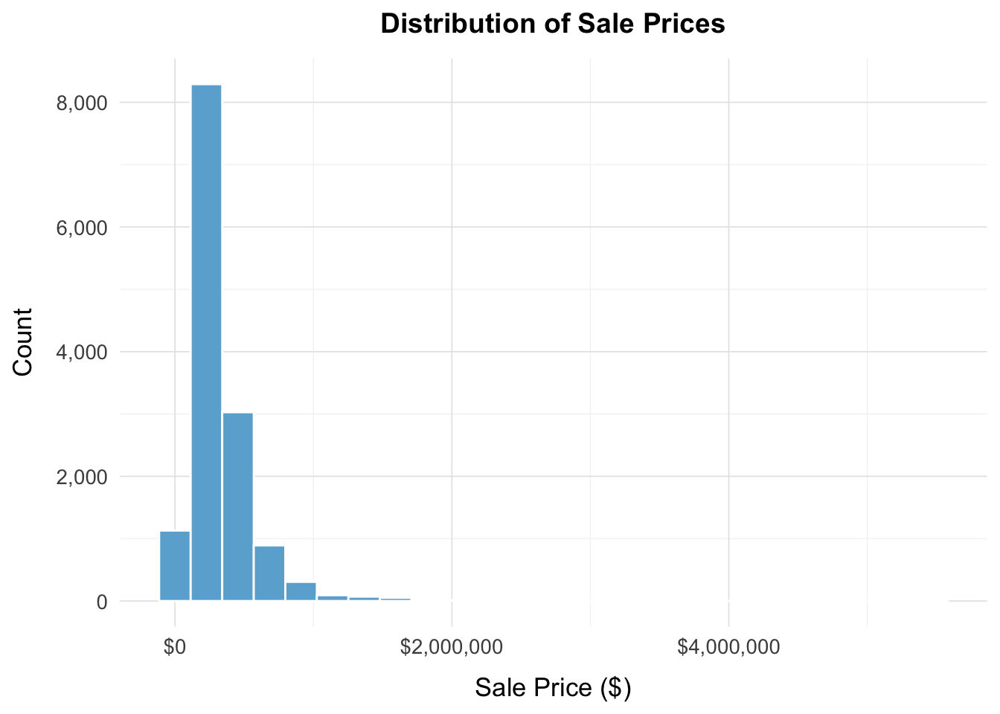
Distribution of Sales Prices - Histogram
The distribution of sales prices is heavily skewed right, with a high percentage of thee transactions below $500,000, and a relatively small number of homes falling in the multi-million dollar range. This chart also also gives insight into the potential presence of high leverage outliers falling toward the left. A concentration of thousands of sales clustered on the lower end of the price ranges suggests strong segmentation, meaning that the market is split into distinct groups, where you see a large cluster of homes that are relatively similar and a smaller but very different cluster of high-value properties with luxury features and few homes in-between, the market looks like separate groups rather than one gradually increasing scale. It’s important to note that this spread likely indicates heteroskedasticity, and would require a log transformation for statistical inference.
Code
# Geographic distribution map - Sale Pricetmap_mode("plot")sale_price_map <-tm_shape(philly_neighborhoods) +tm_polygons(col ="gray95", border.col ="gray65") +tm_shape(final_data) +tm_dots(col ="sale_price",palette ="YlOrRd",size =0.05,style ="quantile",title ="Sale Price ($)") +tm_layout(main.title ="Geographic Distribution of Sale Prices",main.title.position ="center",main.title.size =1.2,legend.outside =TRUE,frame =FALSE,bg.color ="#f5f4f0")sale_price_map
This map displays a high variation of sales prices distributed throughout the city. The higher priced clustered areas are the Center City, University City, the riverfront, and affluent pockets of the Northwest, potentially because these areas provide easy access to transit, employment centers, and cultural amenities. The northern area stretching above Broad Street into parts of West and North Philadelphia displays lower-priced homes, potentially reflecting long-term disinvestment, high vacancy rates, and aging non-renovated housing stock. The spatial clustering suggests that sale price is place-dependent in Philadelphia, mostly due to neighborhood qualities, and fixed effects.
Code
# Sale Price vs structural features scatter plot# Sale Price vs. Square feet price_v_sqft_plot <-ggplot(final_data, aes(x = square_feet, y = sale_price)) +geom_point(alpha =0.4, color ="#08519C", size =1.3) +geom_smooth(method ="lm", se =FALSE, color ="red", linewidth =1) +labs(title ="Sale Price vs. Square Feet",x ="Square Feet",y ="Sale Price ($)") +scale_x_continuous(labels = scales::comma) +scale_y_continuous(labels = scales::dollar) +theme_minimal(base_size =13) +theme(panel.background =element_rect(fill ="#f5f4f0"),panel.grid.major =element_line(color ="gray90", size =0.3),panel.grid.minor =element_line(color ="gray95", size =0.2),plot.title =element_text(hjust =0.5, face ="bold", size =14, margin =margin(b =10)),axis.title.x =element_text(margin =margin(t =10)),axis.title.y =element_text(margin =margin(r =10)) )price_v_sqft_plot
This scatter plot highlights the importance of home size as a structural indicator of value, even though the relationship may not be linear. There is a dense concentration of homes clustered below 3,000 sq ft. and under $500,000 consistent with the sales price distribution. Here we are seeing the same strong skew to the right, displaying a relationship between the two variables. The upward trend is fairly obvious, larger homes = an increase in price, however the spread gets wider as square footage increases, indicating that while square footage is positively associated with price, the weaker relationship among larger properties suggests that additional living space contributes less to value once the home reaches a certain size category.
Code
# Sale Price vs. Number of Fireplaces price_v_fire_plot <-ggplot(final_data, aes(x = fireplace_num, y = sale_price)) +geom_jitter(alpha =0.5, color ="#08519C", size =1.3, width =0.15, height =0) +geom_smooth(method ="lm", se =FALSE, color ="red", linewidth =1) +labs(title ="Sale Price vs. Number of Fireplaces",x ="Number of Fireplaces",y ="Sale Price ($)") +scale_x_continuous(labels = scales::comma) +scale_y_continuous(labels = scales::dollar) +theme_minimal(base_size =13) +theme(panel.background =element_rect(fill ="#f5f4f0"),panel.grid.major =element_line(color ="gray90", size =0.3),panel.grid.minor =element_line(color ="gray95", size =0.2),plot.title =element_text(hjust =0.5, face ="bold", size =14, margin =margin(b =10)),axis.title.x =element_text(margin =margin(t =10)),axis.title.y =element_text(margin =margin(r =10)) )price_v_fire_plot
This chart displays the positive relationship between the value of a home in relation to the quality and character of aesthetic features. Nearly all homes with no fireplaces remain in the lower-mid price range, and once a home has two or more fire places the sale price increases to a much higher range. Homes in Philadelphia with several fireplaces are usually bigger, older, homes with higher-end finishes, meaning that fireplace count can serve as a secondary and indirect indicator of several other indicators that influence home value, and this is the reason for the high level of noise on the chart.
Code
# Sale Price vs. Spatial Features# Sale Price vs Distance to city centerprice_v_spatial_plot <-ggplot(final_data, aes(x = city_dist_mi, y = sale_price)) +geom_point(alpha =0.4, color ="#41AB5D", size =1.3) +geom_smooth(method ="lm", se =FALSE, color ="red", linewidth =1) +labs(title ="Sale Price vs. Distance to Downtown",x ="ln Distance to City Center, mi",y ="Sale Price") +scale_x_continuous(labels = scales::comma) +scale_y_continuous(labels = scales::dollar) +theme_minimal(base_size =13) +theme(panel.grid.major =element_line(color ="gray90", size =0.3),panel.grid.minor =element_line(color ="gray95", size =0.2),plot.title =element_text(hjust =0.5, face ="bold", size =14, margin =margin(b =10)),axis.title.x =element_text(margin =margin(t =10)),axis.title.y =element_text(margin =margin(r =10)) )price_v_spatial_plot
Sale Price vs. Distance to City Center
The plots shows a weak negative relationship between price and distance to the city center. High valued homes fall both close to downtown and well outside of it, highlighting the structure of Philadelphia’s housing market as it relates to location. It’s not a city where closer is always better, instead certain neighborhoods like chestnut hill maintain their high premiums due to neighborhood reputation, and school quality. This pattern suggests that there are many fixed affects at play here, and it is important to note that similar patterns were displayed among many spatial variables.
Code
# Sale Price vs. Distance to Parks - Park Accessibilityprice_v_park_plot <-ggplot(final_data, aes(x = parks_mile, y = sale_price)) +geom_point(alpha =0.4, color ="#238B45", size =1.3) +geom_smooth(method ="lm", se =FALSE, color ="red", linewidth =1) +labs(title ="Sale Price vs. Distance to Nearest Park",x ="Distance to Nearest Park (mi)",y ="Sale Price") +scale_x_continuous(labels = scales::comma) +scale_y_continuous(labels = scales::dollar) +theme_minimal(base_size =13) +theme(panel.grid.major =element_line(color ="gray90", size =0.3),panel.grid.minor =element_line(color ="gray95", size =0.2),plot.title =element_text(hjust =0.5, face ="bold", size =14, margin =margin(b =10)),axis.title.x =element_text(margin =margin(t =10)),axis.title.y =element_text(margin =margin(r =10)) )price_v_park_plot
Sale Price vs. Distance to Parks - Park Accessibility
The plot suggests that distance to parks has very little trend with sale price. Many high-priced properties sit both very close and very far away from parks, suggesting that park accessibility alone may not hold much value. This could be correlated with the fact that some parks are major attractions; i.e Fairmount Park, while others have limited impact on neighborhood desirability, especially in areas of low investment. Because of the difference in park quality across the city, the distance metric may not represents the true relationship, and more neighborhood or amenity variables may be required to capture environmental quality more accurately.
Code
# Median income vs Sale Price per neighborhoodinc_v_price_plot <-ggplot(final_data, aes(x = medhhinc, y = sale_price, color = neighborhood_fe)) +geom_point(alpha =0.5) +geom_smooth(method ="lm", se =FALSE, color ="black") +labs(title ="Relationship Between Median Income and Sale Price by Neighborhood",x ="Median Household Income ($)",y ="Sale Price") +scale_x_continuous(labels = scales::dollar) +scale_y_continuous(labels = scales::dollar) +scale_color_viridis_d(option ="turbo") +theme_minimal(base_size =13) +theme(panel.grid.major =element_line(color ="gray90", size =0.3),panel.grid.minor =element_line(color ="gray95", size =0.2),plot.title =element_text(hjust =0.5, face ="bold", size =14, margin =margin(b =10)),axis.title.x =element_text(margin =margin(t =10)),axis.title.y =element_text(margin =margin(r =10)),legend.position ="bottom",legend.text =element_text(size =7),legend.key.size =unit(0.4, "cm"),legend.box ="horizontal" ) +guides(color =guide_legend(ncol =8, byrow =TRUE))inc_v_price_plot
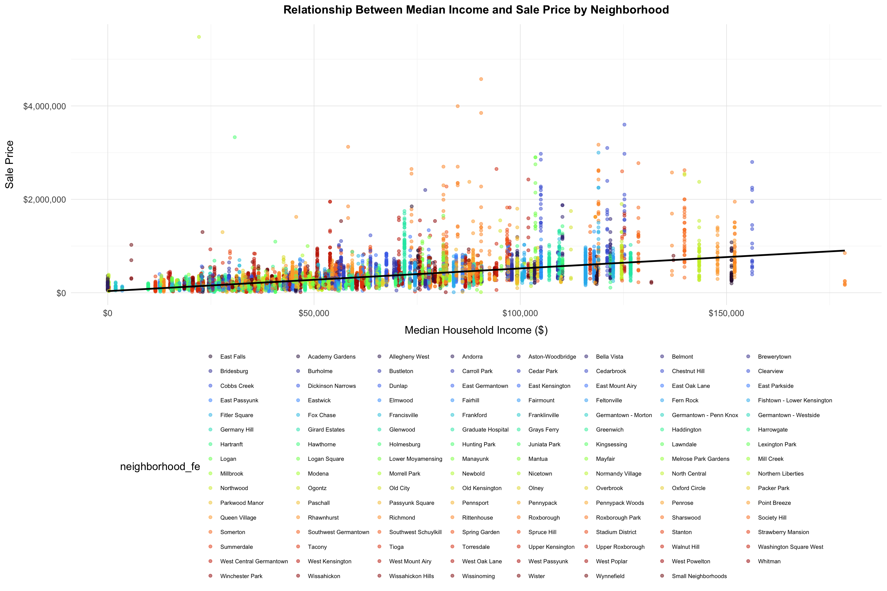
Median Income vs Sale Price per neighborhood
This plot further advances the claim that even with a lot of scatter in the points, there is a noticeable upward trend of homes in higher-income neighborhoods selling for higher prices. Many of the neighborhoods cluster in specific ranges of the price scale, even when income levels are similar, suggesting that the housing market in Philadelphia is dependent not only on demographics or income, but place effects, where reputation or fixed effects in a neighborhood increase or reduce prices. An example of this is some neighborhoods with moderate household incomes still show clusters of high-value transactions, while others with similar incomes remain in the lower end of the market, again highlighting other factors and fixed effects like transit access, historical character, and school quality. The main takeaway is that while higher-income neighborhood tend to have homes with higher sale prices, neighborhood identity also plays a big role in sale price.
Code
# Spatial Relationship Between sale price and structural predictorstmap_mode("plot")# Sale Pricemap_value <-tm_shape(philly_tracts[philly_tracts$COUNTYFP ==101, ]) +tm_polygons(col ="gray90", border.col ="gray45", lwd =0.5) +tm_shape(final_data) +tm_dots(col ="sale_price",palette ="YlOrRd",style ="quantile",size =0.04,title ="Sale Price") +tm_layout(main.title ="Distribution of Sale Prices",main.title.position ="center",main.title.size =1.2,legend.outside =TRUE,frame =FALSE)
Spatial Relationship Between sale price and structural predictors (bathrooms and stories) - Map
This figure shows how housing characteristics are clustered across Philadelphia. Here we can see the sale price distribution directly against certain structural features. Bathrooms and number of stories follow similar geographic patterns, as sale price, areas with higher sales prices tend to have bigger homes with more bathrooms and more stories. In contrast, neighborhoods where homes have less structural amenities also have subsequently lower sale prices. This group of maps makes a strong visual argument that structural features and neighborhood context evolve together, supporting the modeling strategy of incorporating more structural than spatial predictors.
Code
# Sale price histogram.price_hist <-ggplot(residential_points, aes(x = sale_price)) +geom_histogram(fill ="pink", color ="white") +labs(title ="Histogram of Sale Price", x ="Sale Price ($)", y ="Count") +theme_minimal()# Log sale price histogram.ln_price_hist <-ggplot(residential_points, aes(x = ln_sale_price)) +geom_histogram(fill ="pink", color ="white") +labs(title ="Histogram of ln(Sale Price)", x ="ln(Sale Price)", y ="Count") +theme_minimal()grid.arrange(price_hist, ln_price_hist, ncol =2)
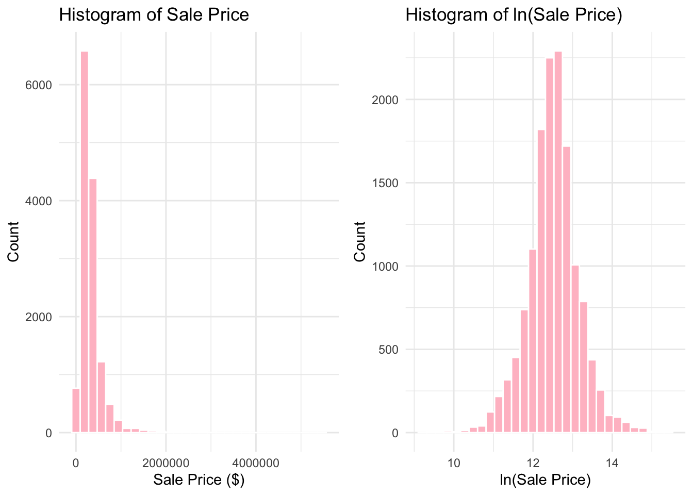
The raw distribution of sale prices is right-skewed with a median of 250,000 USD and a mean of 343,867 USD. There is a substantial gap in price between the third quartile (375,000 USD) and the maximum price (15,428,633 USD). While 75% of houses sold for 375,000 USD or less, the upper 25% exhibits considerable variability, with prices ranging up to 15.4 million USD, affecting the tail distribution. This suggests that a small number of luxury properties are affecting the distribution of the sales price data To address this skewness and improve model performance, we performed a log transformation, making our data closer to normal by compressing the scale of higher values, emphasizing a standardized change in percentage over dollar amount.
Code
# Livable space histogram.livable_area_hist <-ggplot(residential_points, aes(x = square_feet)) +geom_histogram(fill ="wheat", color ="white") +labs(title ="Histogram of Square Feet", x ="Square Feet", y ="Count") +theme_minimal()# Log livable space histogram.ln_square_feet_hist <-ggplot(residential_points, aes(x = ln_square_feet)) +geom_histogram(fill ="wheat", color ="white") +labs(title ="Histogram of ln(Square Feet)", x ="ln(Square Feet)", y ="Count") +theme_minimal()grid.arrange(livable_area_hist, ln_square_feet_hist, ncol =2)
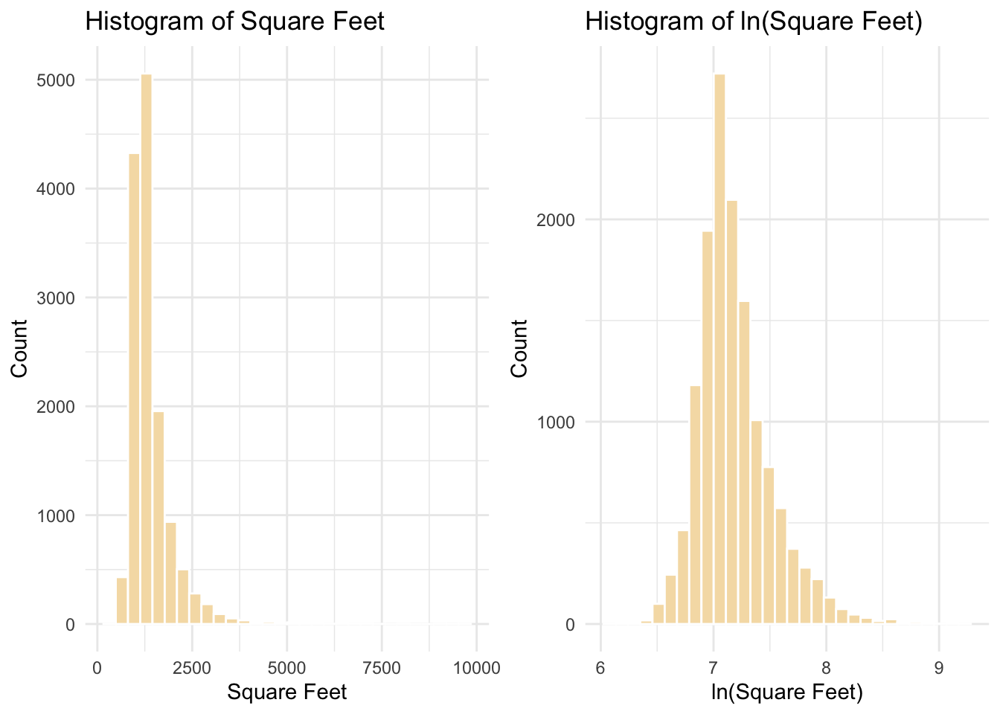
The distribution of livable area is right-skewed, with a median of 1,216 sq ft and a mean of 1,372 sq ft. While 75% of homes are under 1,509 sq ft, a small number of larger properties extend the upper tail of the distribution. Notably, homes above 3,000 sq ft become increasingly sparse, suggesting a separation between standard and luxury housing markets. We applied a log transformation to this variable to create a more symmetric distribution by compressing the scale of larger homes, which improves linearity in our model and allows coefficients to represent proportional rather than absolute changes in square footage.
Code
# Distance to downtown histogram.downtown_dist_hist <-ggplot(residential_points, aes(x = city_dist_mi)) +geom_histogram(fill ="darkblue", color ="white") +labs(title ="Histogram of Downtown Distance", x ="Downtown Distance (mi)", y ="Count") +theme_minimal()# Log distance to downtown histogram.ln_downtown_dist_hist <-ggplot(residential_points, aes(x = ln_city_dist)) +geom_histogram(fill ="darkblue", color ="white") +labs(title ="Histogram of ln(Downtown Distance)", x ="ln(Downtown Distance)", y ="Count") +theme_minimal()grid.arrange(downtown_dist_hist, ln_downtown_dist_hist, ncol =2)
The distribution of distance to Center City (City Hall) is right-skewed, with fewer observations of houses occurring as the distance from Center City/City Hall increases. The effect of distance on housing prices is non-linear: being 1 mile from Center City has a larger impact on price than being 6 vs. 11 miles out. To account for this, we applied a log transformation, which compresses the upper tail, creates a more symmetric distribution, and reduces the influence of extreme distances. This transformation improves linearity in our regression model and allows coefficients to be interpreted as proportional changes in price per proportional change in distance.
Code
# SEPTA buffer histogram.septa_buffer_hist <-ggplot(residential_points, aes(x = septa_half_mi)) +geom_histogram(fill ="azure3", color ="white") +labs(title ="Histogram of SEPTA 0.5mi Buffer", x ="SEPTA 0.5mi Buffer (mi)", y ="Count") +theme_minimal()# Log SEPTA buffer histogram.ln_septa_buffer_hist <-ggplot(residential_points, aes(x = ln_septa_half_mi)) +geom_histogram(fill ="azure3", color ="white") +labs(title ="Histogram of ln(SEPTA 0.5mi Buffer)", x ="ln(SEPTA 0.5mi Buffer)", y ="Count") +theme_minimal()grid.arrange(septa_buffer_hist, ln_septa_buffer_hist, ncol =2)
The distribution of SEPTA access within a 0.5-mile buffer of each property is right-skewed, with a median of 44 and a mean of 52.5. While most properties have between 29 and 69 nearby SEPTA access points, there is substantial variation ranging from zero (likely remote suburban properties) to over 160 in the most transit-dense neighborhoods. The log transformation compresses this wide range and produces a more symmetric distribution, which is appropriate given that transit accessibility exhibits diminishing returns—the marginal benefit of additional access decreases as the total number increases.
Code
# kNN amenities histogram.knn_amenities_hist <-ggplot(residential_points, aes(x = knn_amenity_mi)) +geom_histogram(fill ="darkseagreen", color ="white") +labs(title ="Histogram of kNN Amenities", x ="kNN Amenities (mi)", y ="Count") +theme_minimal()grid.arrange(knn_amenities_hist)
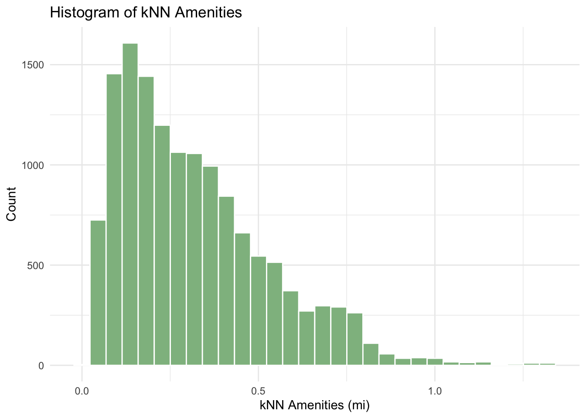
For the kNN Amenities variable, the mean distance to the nearest amenity per household is 0.31 miles, and the median is 0.27 miles. Seventy-five percent of households are within 0.42 miles of any of the 23 amenities described in the data cleaning section. These statistics showcase Philadelphia’s reputation as a highly walkable city. Observations beyond 1 mile typically reflect suburban or rural settings. We did not transform this variable, instead using the raw distances to preserve the direct relationship between amenity proximity and property values.The kNN approach inherently reflects local amenity density, with shorter distances in denser areas and longer distances where households are more dispersed.
Code
# Distance to park histogram..parks_dist <-ggplot(residential_points, aes(x = parks_mile)) +geom_histogram(fill ="darkgreen", color ="white") +labs(title ="Histogram of Parks Distance", x ="Parks Distance (mi)", y ="Count") +theme_minimal()# Log distance to park histogram.ln_parks_dist <-ggplot(residential_points, aes(x = ln_park_dist)) +geom_histogram(fill ="darkgreen", color ="white") +labs(title ="Histogram of ln(Parks Distance)", x ="Parks Distance", y ="Count") +theme_minimal()grid.arrange(parks_dist, ln_parks_dist, ncol =2)
The distribution of the variable Distance from Parks by miles is showing a slight right skew. Between the third quartile and the maximum there is a jump of about 3 miles, indicating outliers beyond 2 miles. Due to this, we chose to log the variable to ensure it is normal for our model.
Code
# Number of bathrooms histogram.ggplot(residential_points, aes(x = bath_num)) +geom_histogram(fill ="gold", color ="white") +labs(title ="Histogram of Bathrooms", x ="Bathrooms", y ="Count") +theme_minimal()
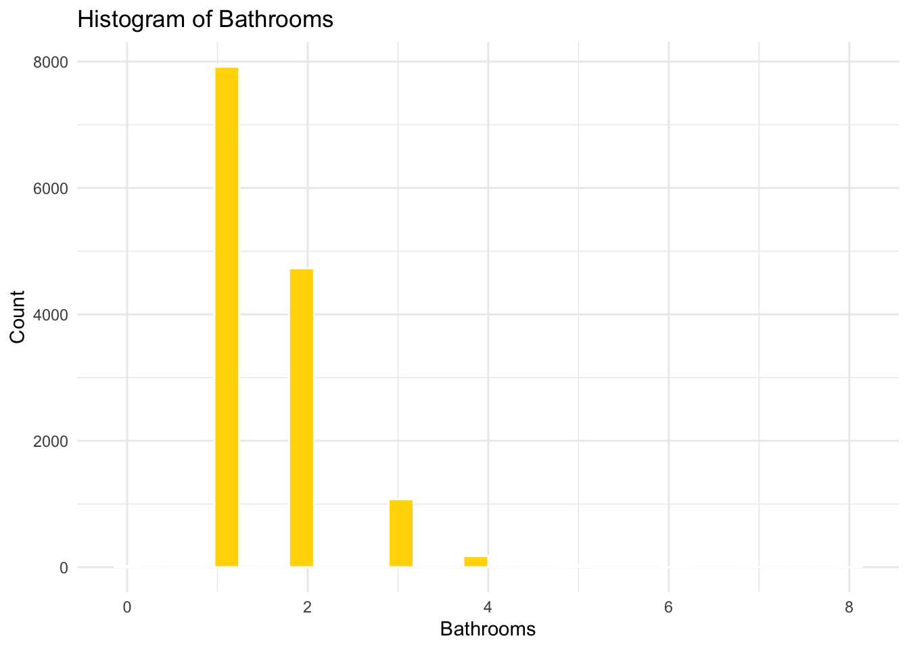
The histogram showcases the number of observations of properties with n bathrooms. Most observations exhibit 1 or 2 bathrooms per property, with a an outlier of 8 bathrooms.
Code
# Number of fireplaces histogram.ggplot(residential_points, aes(x = fireplace_num)) +geom_histogram(fill ="darkred", color ="white") +labs(title ="Histogram of Fireplaces", x ="Fireplaces", y ="Count") +theme_minimal()
This histogram showcases the number of observations with n fireplaces. Most observations contain 0 fireplaces, with outliers of property(ies) containing 2 or more.
Code
# Number of garages histogram.ggplot(residential_points, aes(x = garage_num)) +geom_histogram(fill ="gray", color ="white") +labs(title ="Histogram of Garages", x ="Garages", y ="Count") +theme_minimal()
This histogram showcases the number of garages available per observation. The median is 0 garages per property, with a maximum of 5 garages per property.
Code
# Number of stories histogram.ggplot(residential_points, aes(x = story_num)) +geom_histogram(fill ="orange", color ="white") +labs(title ="Histogram of Stories", x ="Stories", y ="Count") +theme_minimal()
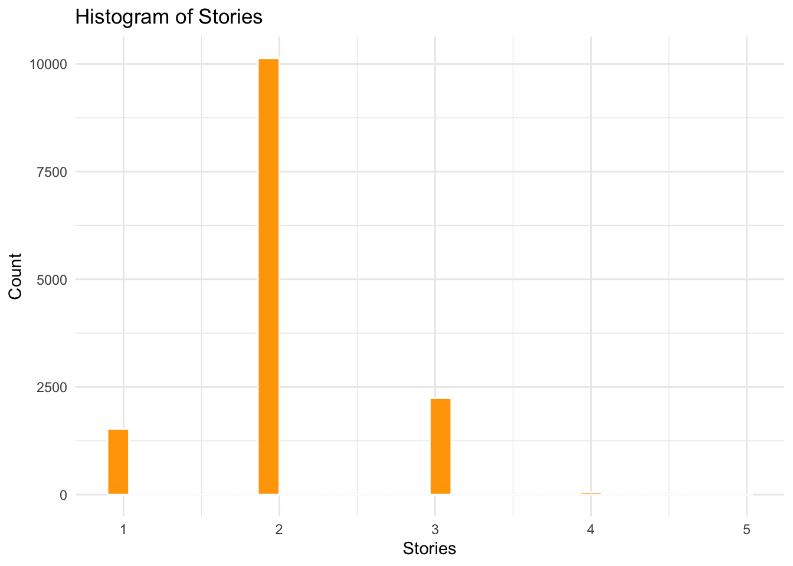
This histogram showcases the number of observations that contain n housing stories. The median is 2 stories per property, with a maximum of 5 stories.
Code
# Age histogram.ggplot(residential_points, aes(x = age)) +geom_histogram(fill ="black", color ="white") +labs(title ="Histogram of Age", x ="Age", y ="Count") +theme_minimal()
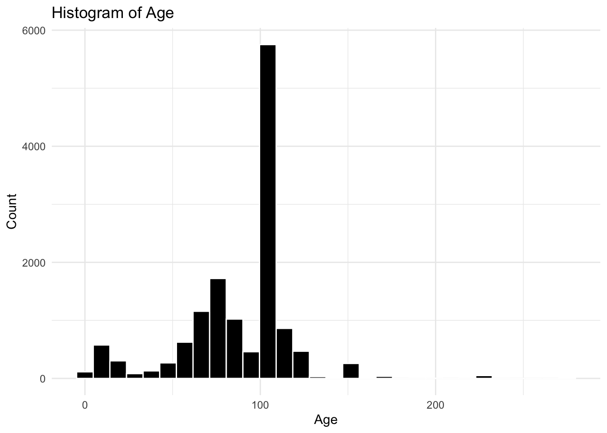
This histogram showcases the amount of observations with their calculated ages (years) based off year built. The median age is 100 years, and the maximum is 275 years. This was then transformed into a polynomial variable to account for the decrease in housing price as the home ages until a certain age, then the price rises again.
Code
# Histogram for pct_povertyggplot(philly_acs_summary, aes(x = pct_poverty)) +geom_histogram(fill ="skyblue", color ="white") +labs(title ="Histogram of Percent Poverty", x ="Percent Poverty (%)", y ="Count") +theme_minimal()
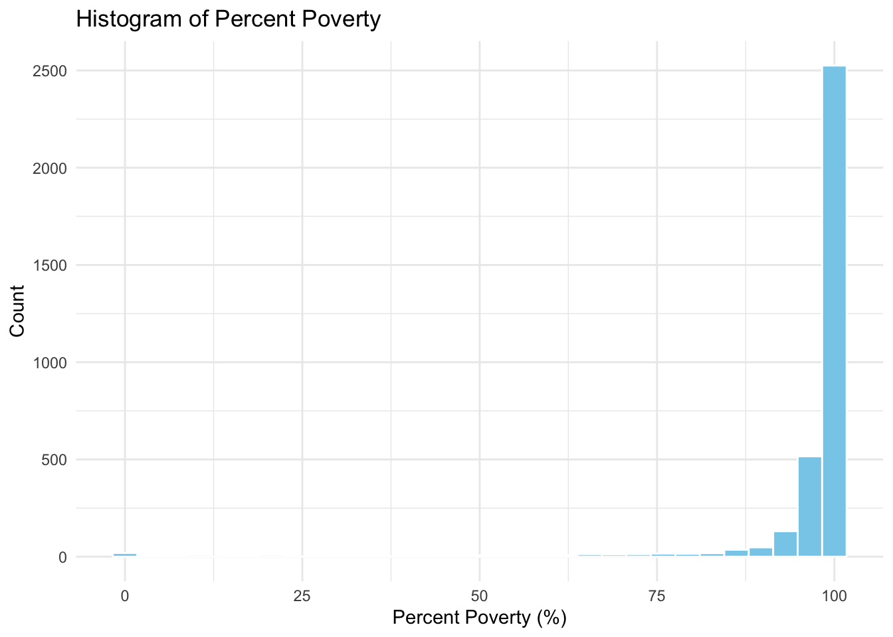
This histogram presents the tracts with their determined percent poverty. The percentage is suspiciously high with the range from the minimum (0%) from the first quartile is 98 percent.We also have 32 tracts with no data.
Code
# Histogram for pct_bachggplot(philly_acs_summary, aes(x = pct_bach)) +geom_histogram(binwidth =5, fill ="lightgreen", color ="white") +labs(title ="Histogram of Percent Bachelor Degree Holders", x ="Percent Bachelor Degree Holders (%)", y ="Count") +theme_minimal()
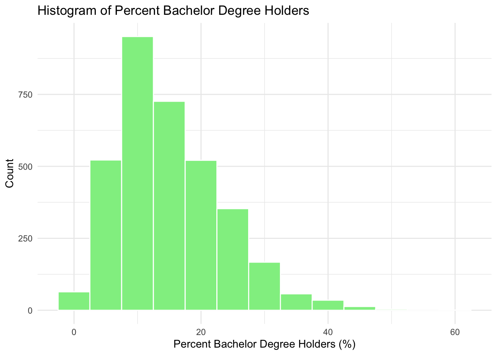
This histogram shows the distribution of percent of bachelor + degree holders per census tract. The median is 13.5 %, with most tracts falling between the minimum and third quartile. We also have 32 tracts with no data.
Code
# Histogram for pct_vacantggplot(philly_acs_summary, aes(x = pct_vacant)) +geom_histogram(binwidth =10, fill ="salmon", color ="white") +labs(title ="Histogram of Percent Vacant Units", x ="Percent Vacant (%)", y ="Count") +theme_minimal()
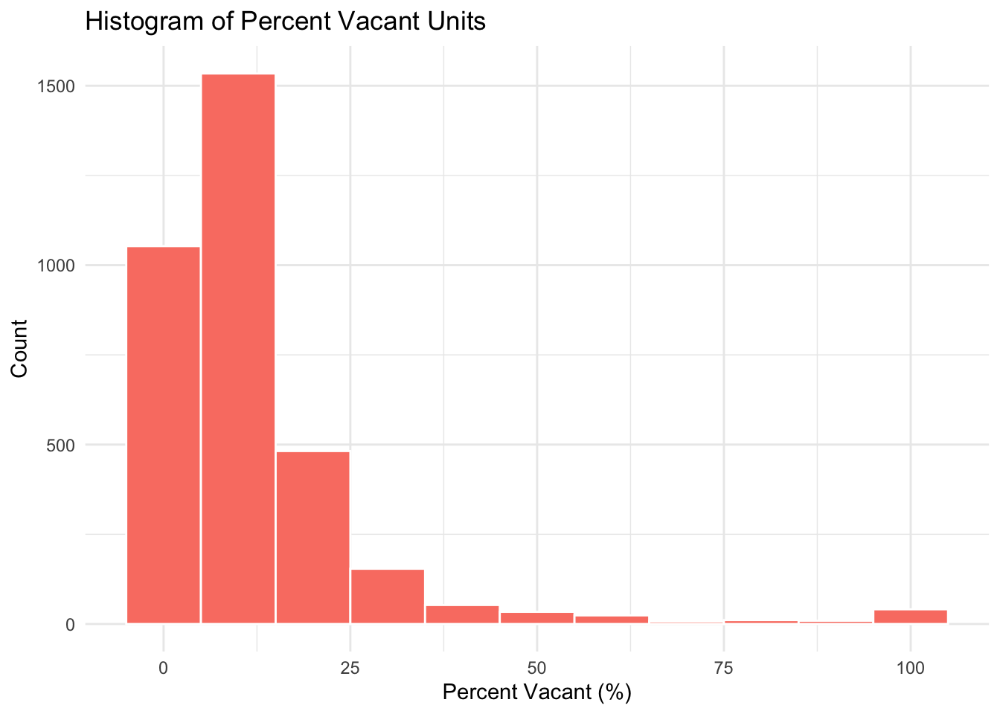
This histogram shows the distribution of percent vacant residences within the census tracts. The median percentage of vacant homes is 8 percent. We also have 44 tracts with no data.
Code
# Histogram for pct_single_familyggplot(philly_acs_summary, aes(x = pct_single_family)) +geom_histogram(binwidth =5, fill ="orange", color ="white") +labs(title ="Histogram of Percent Single-Family Homes ", x ="Percent Single-Family (%)", y ="Count") +theme_minimal()
This histogram represents the percent of single families per tract. The median for percent single families per tract is 66.58%. We also have 45 tracts with no data.
Code
# Histogram for medhhincggplot(philly_acs_summary, aes(x = medhhinc)) +geom_histogram(binwidth =10000, fill ="purple", color ="white") +labs(title ="Histogram of Median Household Income", x ="Median Household Income ($)", y ="Count") +theme_minimal()
This histogram represents the median household income value per census tract. The median of the median household income value is $66,795. Slightly right-skewed. We also have 32 tracts with no data.
University City is the hardest to predict, Penn owns a lot of property that doesn’t get taxed. And some less wealthy and disinvested neighborhoods are overvalued, like Parkside and Wynnefield in West Philadelphia, but the overall model predicts pretty accurately for most neighborhoods in Philadelphia.
The residual plot shows that most residuals are centered around zero, but the spread of residuals increases as the fitted values grow. This “funnel-shaped” pattern suggests potential heteroskedasticity, meaning the variance of errors may increase for higher-priced properties. While the overall linearity assumption appears reasonable, the increasing dispersion indicates that the model’s prediction error is not constant across the price range.
The Q–Q plot reveals that the residuals deviate from the reference line in both tails, especially in the upper tail. This pattern indicates that the residuals are right-skewed and not perfectly normally distributed. The deviation is mainly driven by a small number of very high sale-price observations, which pull the residual distribution upward. However, moderate departures from normality are common in housing price data and generally do not invalidate the model.
The Cook’s distance plot shows that almost all observations have very small influence values (below the 4/n threshold), indicating that the model is not dominated by a few extreme points. A few cases exhibit slightly higher Cook’s D values, suggesting the presence of mildly influential outliers, but none appear to exert excessive leverage on the regression coefficients.
Detailed Discussion
Our final model achieves a cross-validated R² of 0.746, explaining approximately 75% of the variance in Philadelphia residential sale prices. The Mean Absolute Error (MAE) of 72,299 USD indicates that, on average, predicted sale prices deviate from actual prices by roughly 29% of the median home price (250,000 USD). However, the Root Mean Squared Error (RMSE) of 138,257USD—nearly double the MAE—reveals that the model struggles disproportionately with high-value properties. This discrepancy, combined with residuals ranging from -817,701 USD to +5.1 million USD, reflects the outsized influence of luxury homes on overall error. Diagnostic plots confirm these patterns: the Q-Q plot shows deviation from normality in both tails (especially the upper tail), while the residuals vs. fitted values plot exhibits a funnel-shaped pattern indicating heteroskedasticity—prediction error variance increases systematically for higher-priced properties. Despite these issues, the median residual of 2,339 USD (near zero) suggests the model’s predictions are generally unbiased for typical homes, and Cook’s distance values remain well below concerning thresholds, indicating no single observation dominates the model.
The model’s minimum and maximum residuals range from -817,701 USD to +5.1 million USD, reflecting the outlier influence from luxury properties. While simultaneously referencing the QQ Plot, the model reflects two tails in the plot, but more in the positive region, indicating the model is not 100% normal. However, the residual distribution with the median residual of 2,339 USD is fairly close to 0, meaning the model predictions are generally centered about sale prices with limited bias in sale prediction. It is imperative to keep in mind that in the residuals vs fitted values plot, the increase of observations fanning-out as the predicted sale price value increases indicates the existence of heteroskedasticity between some variables.
We have concluded that ln_square_feet, neighborhood fixed effects, median household income, number of bathrooms and number of fireplaces as the most significant variables in our model. We calculated this by doing a stepwise regression, and these five yield the highest \(R^2\).
We grossly underpredicted for University City, and a decent amount for Fairmount. This model struggles to accurately predict rural areas and overpredicted uninvested neighborhoods. The severe underprediction of University City may be due to the existence and proximity to Drexel University and the University of Pennsylvania.